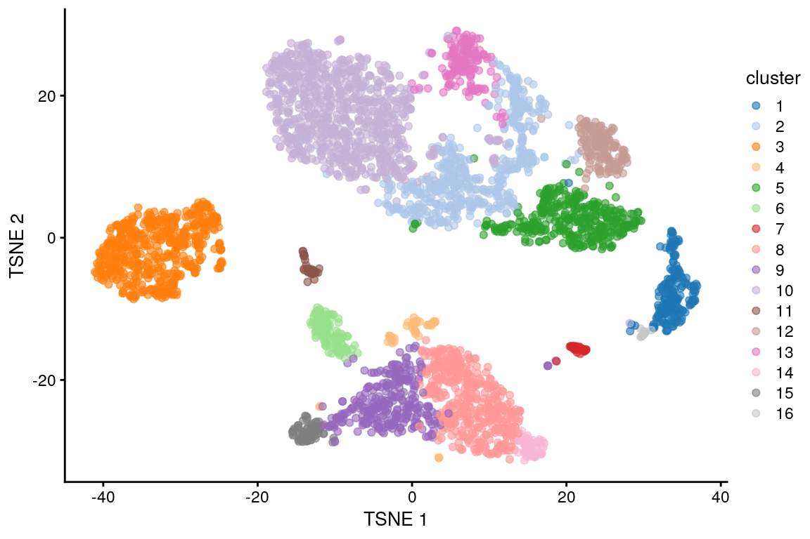

9 Clustering
Instructora: Laura Gómez-Romero
Este contenido está basado en las diapositivas de Peter Hickey. Ve las diapositivas aquí. Y en el curso de OSCA, lee el material aquí
9.1 Dataset ilustrativo: 10X PBMC4k no filtrado
library(BiocFileCache)
bfc <- BiocFileCache()
raw.path <- bfcrpath(bfc, file.path(
"http://cf.10xgenomics.com/samples",
"cell-exp/2.1.0/pbmc4k/pbmc4k_raw_gene_bc_matrices.tar.gz"
))
untar(raw.path, exdir = file.path(tempdir(), "pbmc4k"))
library(DropletUtils)
library(Matrix)
fname <- file.path(tempdir(), "pbmc4k/raw_gene_bc_matrices/GRCh38")
sce.pbmc <- read10xCounts(fname, col.names = TRUE)Dataset de células mononucleares de sangre periférica humana (PBMC) de 10X Genomics
Descripción aquí
Zheng, G. X. Y. et al. Massively parallel digital transcriptional profiling of single cells. Nat. Commun. 8, 14049 (2017)
# gene-annotation
library(scater)
rownames(sce.pbmc) <- uniquifyFeatureNames(
rowData(sce.pbmc)$ID, rowData(sce.pbmc)$Symbol
)
library(EnsDb.Hsapiens.v86)
location <- mapIds(EnsDb.Hsapiens.v86,
keys = rowData(sce.pbmc)$ID,
column = "SEQNAME", keytype = "GENEID"
)
# cell-detection
set.seed(100)
e.out <- emptyDrops(counts(sce.pbmc))
sce.pbmc <- sce.pbmc[, which(e.out$FDR <= 0.001)]# quality-control
stats <- perCellQCMetrics(sce.pbmc,
subsets = list(Mito = which(location == "MT"))
)
high.mito <- isOutlier(stats$subsets_Mito_percent,
type = "higher"
)
sce.pbmc <- sce.pbmc[, !high.mito]
# normalization
library(scran)
set.seed(1000)
clusters <- quickCluster(sce.pbmc)
sce.pbmc <- computeSumFactors(sce.pbmc, cluster = clusters)
sce.pbmc <- logNormCounts(sce.pbmc)# variance modelling
set.seed(1001)
dec.pbmc <- modelGeneVarByPoisson(sce.pbmc)
top.pbmc <- getTopHVGs(dec.pbmc, prop = 0.1)# dimensionality-reduction
set.seed(10000)
sce.pbmc <- denoisePCA(sce.pbmc,
subset.row = top.pbmc,
technical = dec.pbmc
)
set.seed(100000)
sce.pbmc <- runTSNE(sce.pbmc, dimred = "PCA")
set.seed(1000000)
sce.pbmc <- runUMAP(sce.pbmc, dimred = "PCA")¿Alquien me puede explicar que hace el método que etamos usando para reducir la dimensionalidad de los datos?
¿Los HGVs están almacenados en nuestro objeto sce.pbmc?
9.2 Motivación
Clustering es un procedimiento no supervisado par definir grupos de células con perfiles de expresión similares
Su propósito principal es resumir los datos en un formato digerido susceptible a interpretación humana
Nos permite asignar etiquetas (por ejemplo, tipos celulares) a las células
9.3 ¿Por qué no realizamos el clustering sobre las coordenadas de t-SNE/UMAP?
Las técnicas de t-SNE/UMAP han comprimido datos altamente multi-dimensionales en dos dimensiones
Esta compresión inevitablemente ha provocado la perdida de información
Por lo tanto, agrupamos sobre los PCs y después visualizamos las identidades de los clusters en la gráfica t-SNE/UMAP
9.4 ¿Cuál es el verdadero clustering?

Un cluster no implica un tipo celular
Nosotros podemos definir tantos clusters como queramos y podemos utilizar el algoritmo que más nos acomode
El clustering, como un microscopio, simplemente es una herramienta para explorar los datos
Preguntar por el mejor clustering es similar a preguntar cuál es la mejor magnificación en un microscopio sin contenido
9.5 Clustering basado en grafos
9.5.1 Antecedentes
El clustering basado en grafos fue popularizado (más no inventado) por su uso en Seurat
Objetivo: Construir un grafo en el que cada nodo es una célula que está conectada a sus vecinos más cercanos en el espacio multidimensional
9.5.2 Gráfica de los k vecinos más cercanos (k-nearest neighbour -KNN- graph)
Ilustremos como funciona para 20 células


9.5.3 Gráfica de los vecinos más próximos compartidos (SNN)
De una gráfica KNN se puede construir una grafica SNN

En este tipo de grago, dos células estarán conectadas por una arista si comparten alguno de sus vecinos más próximos.
Podemos asignar pesos a cada arista del grafo, basándonos en la similaridad de las células involucradas, dándole pesos más altos a células que están más cercanamente relacionadas
9.5.4 Gráfica SNN con pesos en las aristas

Para ver los distintos esquemas de pesado puedes consultar la documentación de la función makeSNNGraph del paquete bluster. Algunos ejemplos son:
-Rango: El peso entre dos nodos está dado por k-r/2 donde r es la suma más pequeña de los rangos (de proximidad, el vecino más cercano tiene el rango 1) para cualquiera de los vecinos compartidos -Número: el peso entre dos nodos es igual al número de vecinos más próximos compartidos -Jaccard: el peso entre dos nodos es igual a la similaridad de Jaccard entre los conjuntos de vecinos de estos nodos
9.5.5 Obteniendo comunidades a partir de una gráfica SNN pesada mediante un algoritmo de clustering
A partir de una gráfica SNN pesada podemos aplicar algoritmos para identificar comunidades de células
Comunidades son grupos de células que están más conectadas a células en el mismo grupo que lo que están a células de un grupo diferente
Cada comunidad representa un cluster

9.5.6 Resumen de clustering basado en grafos
- La construcción y búsqueda de una red KNN es rápida, por lo tanto, es escalable para datasets grandes
- Debes evitar obtener conclusiones fuertes acerca de la forma de los clusters o la distribución de células dentro de cada cluster
- El algoritmo, conecta cada célula con un número mínimo de células vecinas, lo cual reduce el riesgo de clusters no informativos con unos pocos outliers
Después de la construcción del grafo, no se almacena información adicional más alla de las células vecinas. Esto puede producir subclusters artificiales en regiones con muchas células
9.5.7 Detalles a considerar en la implementación
- ¿Cuántas céulas vecinas debo considerar durante la construcción del grafo?
- ¿Cómo debo pesar las aristas?
- ¿Cuál algoritmo de detección de comunidades se debe usar para definir los clusters?
9.5.8 Implementación
library(scran)
# Build graph using k = 10 nearest neighbours in PCA-space
g <- buildSNNGraph(sce.pbmc, k = 10, use.dimred = "PCA")
# Identify communities using the Walktrap method
clust <- igraph::cluster_walktrap(g)$membership# Visualise clusters on t-SNE plot
library(scater)
sce.pbmc$cluster <- factor(clust)
plotReducedDim(sce.pbmc, "TSNE", colour_by = "cluster")
¿Qué pasa si utilizas una k más grande o más pequeña?
library(scran)
# Build graph using k = 50 nearest neighbours in PCA-space
g50 <- buildSNNGraph(sce.pbmc, k = 50, use.dimred = "PCA")
# Identify communities using the Walktrap method
clust50 <- igraph::cluster_walktrap(g50)$membership# Visualise clusters on t-SNE plot
library(scater)
sce.pbmc$cluster50 <- factor(clust50)
plotReducedDim(sce.pbmc, "TSNE", colour_by = "cluster50")En esta implementación:
- La construcción de la red KNN se baso en la distancia Euclideana entre células
- La construcción de la red KNN implica que las aristas se crean entre todos los pares de células que comparten por lo menos un vecino
- Se utilizó el esquema de peso de: Xu and Su (2015)
9.5.9 Eligiendo un valor de k
El valor de k puede ser toscamente interpretado como el tamaño anticipado de la subpoblación más pequeña
Si una subpoblación tiene menos que (k+1) células entonces el método será forzado a construir aristas entre células de esa subpoblación y células de otras subpoblaciones
Esto incrementa el riesgo de que la subpoblación en cuestión no forme su propio cluster
9.5.10 Una implementación diferente: estilo Seurat
# Jaccard-based weights followed by Louvain clustering
# aka 'Seurat-style' clustering
g2 <- buildSNNGraph(sce.pbmc, k = 10, use.dimred = "PCA", type = "jaccard")
clust2 <- igraph::cluster_louvain(g2)$membership
sce.pbmc$cluster2 <- factor(clust2)
plotReducedDim(sce.pbmc, "TSNE", colour_by = "cluster2")
9.5.11 Detalles de las implementaciones más comunes
Pipelines basados en Seurat:
- Pesos basados en Jacard
- Clustering Louvain
Pipelines basados en Scran:
- Pesos basados en Randos
- Clustering Walktrap
Para detalles sobre la seleccion de parámetros y comparaciones: visitar esta página.
library("patchwork")
plotReducedDim(sce.pbmc, "TSNE", colour_by = "cluster") +
plotReducedDim(sce.pbmc, "TSNE", colour_by = "cluster2")Estilo scran vs estilo Seurat.
9.5.12 Otras implementaciones
Distintas métricas de distancia
g.num <- buildSNNGraph(sce.pbmc, use.dimred = "PCA", type = "number")
g.jaccard <- buildSNNGraph(sce.pbmc, use.dimred = "PCA", type = "jaccard")
g.none <- buildKNNGraph(sce.pbmc, use.dimred = "PCA")Distintos métodos de clustering
clust.louvain <- igraph::cluster_louvain(g)$membership
clust.infomap <- igraph::cluster_infomap(g)$membership
clust.fast <- igraph::cluster_fast_greedy(g)$membership
clust.labprop <- igraph::cluster_label_prop(g)$membership
clust.eigen <- igraph::cluster_leading_eigen(g)$membership9.6 Evaluando la separación de los clusters
Modularidad es una métrica natural para evaluar la separación entre comunidades/clusters
La modularidad se define como la diferencia (escalada) entre el peso total observado de las aristas entre los nodos en el mismo cluster y el peso total esperado si los pesos fueran distribuidos aleatoriamente entre todos los pares de nodos
Nosotros calcularemos un score de modularidad para cada cluster usando las tasas en vez de las diferencias, debido a que las tasas no se ven tan fuertemente influenciadas por el tamaño de los clusters
library(bluster)
# obteniendo la métrica de modularidad
ratio <- pairwiseModularity(g, clust, as.ratio = TRUE)
dim(ratio)## [1] 16 16library(pheatmap)
pheatmap(log2(ratio + 1),
cluster_rows = FALSE,
cluster_cols = FALSE,
color = colorRampPalette(c("white", "blue"))(100)
)
Un dataset que contiene clusters bien separados debería contener la mayoría del peso total observado en las entradas diagonales, i.e la mayoría de las aristas ocurren entre células del mismo cluster
Para más detalles sobre evaluación de la separación entre clusters visite esta página
9.7 Otros métodos de clustering
Clustering por k-means
- PRO: Rápido
- Se debe especificar el número de clusters de antemano
- Favorece clusters esféricos
Clustering jerárquico
- Produce un dendograma (árbol) representando las células y la similaridad entre subpoblaciones a varias resoluciones
- Demasiado lento para correrse en algo más grande que los datasets más pequeños de scRNA-seq
9.8 Evaluando la estabilidad de los clusters
Una propiedad deseable de un cluster dado es que éste sea estable a las perturbaciones en los datos de entrada, de esta manera:
- Pequeños cambios al procesamiento no cambiarán el resultado
- Se incrementa la probabilidad de que las conclusiones puedan ser replicadas en un estudio independiente
Uno puede hacer un proceso de bootstrap para evaluar la estabilidad de un algoritmo de clustering en un dataset dado y calcular la coasignación. La coasignación es la probabilidad de que células elegidas al azar del cluster X y Y sean asignadas al mismo cluster en la réplica del proceso de bootstrap
myClusterFUN <- function(x) {
g <- buildSNNGraph(x, use.dimred = "PCA", type = "jaccard")
igraph::cluster_louvain(g)$membership
}
originals <- myClusterFUN(sce.pbmc)
set.seed(0010010100)
coassign <- bootstrapStability(sce.pbmc,
FUN = myClusterFUN,
clusters = originals
)pheatmap(coassign,
cluster_row = FALSE, cluster_col = FALSE,
color = rev(viridis::magma(100))
)
Probabilidad alta de coasignación indica que X no es estable con respecto a su separación de Y.
Queremos altas probabilidades de coasignación en la diagonal
Debes considerar que el bootstraping solo considera el efecto del ruido de muestreo e ignora otros factores que pueden afectar la reproducibilidad (como efectos de batch o variación entre los donadores)
Además, una pobre separación puede ser altamente estable
9.9 Subclustering
Mejora la resolucón al repetir el proceso de feature selection y clustering dentro de un único cluster
Se enfoca en los HGVs y PCs que son los más relevantes para un cluster específico
g.full <- buildSNNGraph(sce.pbmc, use.dimred = "PCA")
clust.full <- igraph::cluster_walktrap(g.full)$membership
sce.pbmc$clust.full <- factor(clust.full)
plotExpression(sce.pbmc,
features = c("CD3E", "CCR7", "CD69", "CD44"),
x = "clust.full", colour_by = "clust.full"
)CD3E, CCR7, CD69, y CD44 son marcadores de células T de memoria. Dentro de las células T de memoria, ¿dónde están las subpoblaciones CD4+ y CD8+?
# Repeating modelling and PCA on the subset of cells we have
# identified as memory T-cells (cluster 6).
memory <- 10
sce.memory <- sce.pbmc[, clust.full == memory]
dec.memory <- modelGeneVar(sce.memory)
sce.memory <- denoisePCA(sce.memory,
technical = dec.memory,
subset.row = getTopHVGs(dec.memory, prop = 0.1)
)
# Repeating clustering on the subset.
g.memory <- buildSNNGraph(sce.memory, use.dimred = "PCA")
clust.memory <- igraph::cluster_walktrap(g.memory)$membership
sce.memory$clust.memory <- factor(clust.memory)plotExpression(sce.memory,
features = c("CD8A", "CD4"),
x = "clust.memory"
)Expresión de CD4 es bajo, por lo tanto, su cambio es modesto, pero la interpretación es clara
scran::quickSubCluster() ciclará sobre los clusters y realizará el proceso de subclustering de acuerdo a una función especificada por el usuario. Esto asume que la misma función es apropiada para todos los clusters
Si tipos celulares o estados celulares se extienden sobre las fronteras de los clusters, entonces un subcluster podría representar contaminación de un tipo celular en un cluster separado
9.10 Resumen y recomendaciones
Un cluster no implica un tipo celular
Nosotros podemos definir tantos clusters como queramos y podemos utilizar el algoritmo que más nos acomode
El clustering, como un microscopio, simplemente es una herramienta para explorar los datos
Preguntar por el mejor clustering es similar a preguntar cuál es la mejor magnificación en un microscopio sin contenido
- Clustering basado en grafos es rápido y evita tener que hacer suposiciones fuertes sobre la forma de los clusters o la distribución de las células dentro de cada cluster:
- scran::buildSNNGraph()
- igraph::cluster_walktrap() o igraph::cluster_louvain()
Modularidad y estabilidad de los clusters son diagnósticos útiles
El proceso de subclustering podría mejorar la resolución dentro de clusters grandes
9.11 Donde estamos

9.12 Detalles de la sesión de R
## Información de la sesión de R
Sys.time()## [1] "2021-08-13 16:18:21 UTC"proc.time()## user system elapsed
## 229.160 5.205 231.030options(width = 120)
sessioninfo::session_info()## ─ Session info ───────────────────────────────────────────────────────────────────────────────────────────────────────
## setting value
## version R version 4.1.0 (2021-05-18)
## os Ubuntu 20.04.2 LTS
## system x86_64, linux-gnu
## ui X11
## language (EN)
## collate en_US.UTF-8
## ctype en_US.UTF-8
## tz UTC
## date 2021-08-13
##
## ─ Packages ───────────────────────────────────────────────────────────────────────────────────────────────────────────
## package * version date lib source
## AnnotationDbi * 1.54.1 2021-06-08 [1] Bioconductor
## AnnotationFilter * 1.16.0 2021-05-19 [1] Bioconductor
## assertthat 0.2.1 2019-03-21 [1] RSPM (R 4.1.0)
## beachmat 2.8.0 2021-05-19 [1] Bioconductor
## beeswarm 0.4.0 2021-06-01 [1] RSPM (R 4.1.0)
## Biobase * 2.52.0 2021-05-19 [1] Bioconductor
## BiocFileCache * 2.0.0 2021-05-19 [1] Bioconductor
## BiocGenerics * 0.38.0 2021-05-19 [1] Bioconductor
## BiocIO 1.2.0 2021-05-19 [1] Bioconductor
## BiocNeighbors 1.10.0 2021-05-19 [1] Bioconductor
## BiocParallel 1.26.1 2021-07-04 [1] Bioconductor
## BiocSingular 1.8.1 2021-06-08 [1] Bioconductor
## biomaRt 2.48.2 2021-07-01 [1] Bioconductor
## Biostrings 2.60.2 2021-08-05 [1] Bioconductor
## bit 4.0.4 2020-08-04 [1] RSPM (R 4.1.0)
## bit64 4.0.5 2020-08-30 [1] RSPM (R 4.1.0)
## bitops 1.0-7 2021-04-24 [1] RSPM (R 4.1.0)
## blob 1.2.2 2021-07-23 [1] RSPM (R 4.1.0)
## bluster * 1.2.1 2021-05-27 [1] Bioconductor
## bookdown 0.22 2021-04-22 [1] RSPM (R 4.1.0)
## bslib 0.2.5.1 2021-05-18 [1] RSPM (R 4.1.0)
## cachem 1.0.5 2021-05-15 [2] RSPM (R 4.1.0)
## cli 3.0.1 2021-07-17 [2] RSPM (R 4.1.0)
## cluster 2.1.2 2021-04-17 [3] CRAN (R 4.1.0)
## colorspace 2.0-2 2021-06-24 [1] RSPM (R 4.1.0)
## cowplot 1.1.1 2020-12-30 [1] RSPM (R 4.1.0)
## crayon 1.4.1 2021-02-08 [2] RSPM (R 4.1.0)
## curl 4.3.2 2021-06-23 [2] RSPM (R 4.1.0)
## DBI 1.1.1 2021-01-15 [1] RSPM (R 4.1.0)
## dbplyr * 2.1.1 2021-04-06 [1] RSPM (R 4.1.0)
## DelayedArray 0.18.0 2021-05-19 [1] Bioconductor
## DelayedMatrixStats 1.14.2 2021-08-08 [1] Bioconductor
## digest 0.6.27 2020-10-24 [2] RSPM (R 4.1.0)
## dplyr 1.0.7 2021-06-18 [1] RSPM (R 4.1.0)
## dqrng 0.3.0 2021-05-01 [1] RSPM (R 4.1.0)
## DropletUtils * 1.12.2 2021-07-22 [1] Bioconductor
## edgeR 3.34.0 2021-05-19 [1] Bioconductor
## ellipsis 0.3.2 2021-04-29 [2] RSPM (R 4.1.0)
## EnsDb.Hsapiens.v86 * 2.99.0 2021-07-29 [1] Bioconductor
## ensembldb * 2.16.4 2021-08-05 [1] Bioconductor
## evaluate 0.14 2019-05-28 [2] RSPM (R 4.1.0)
## fansi 0.5.0 2021-05-25 [2] RSPM (R 4.1.0)
## farver 2.1.0 2021-02-28 [1] RSPM (R 4.1.0)
## fastmap 1.1.0 2021-01-25 [2] RSPM (R 4.1.0)
## filelock 1.0.2 2018-10-05 [1] RSPM (R 4.1.0)
## FNN 1.1.3 2019-02-15 [1] RSPM (R 4.1.0)
## generics 0.1.0 2020-10-31 [1] RSPM (R 4.1.0)
## GenomeInfoDb * 1.28.1 2021-07-01 [1] Bioconductor
## GenomeInfoDbData 1.2.6 2021-07-29 [1] Bioconductor
## GenomicAlignments 1.28.0 2021-05-19 [1] Bioconductor
## GenomicFeatures * 1.44.0 2021-05-19 [1] Bioconductor
## GenomicRanges * 1.44.0 2021-05-19 [1] Bioconductor
## ggbeeswarm 0.6.0 2017-08-07 [1] RSPM (R 4.1.0)
## ggplot2 * 3.3.5 2021-06-25 [1] RSPM (R 4.1.0)
## glue 1.4.2 2020-08-27 [2] RSPM (R 4.1.0)
## gridExtra 2.3 2017-09-09 [1] RSPM (R 4.1.0)
## gtable 0.3.0 2019-03-25 [1] RSPM (R 4.1.0)
## HDF5Array 1.20.0 2021-05-19 [1] Bioconductor
## highr 0.9 2021-04-16 [2] RSPM (R 4.1.0)
## hms 1.1.0 2021-05-17 [1] RSPM (R 4.1.0)
## htmltools 0.5.1.1 2021-01-22 [1] RSPM (R 4.1.0)
## httr 1.4.2 2020-07-20 [2] RSPM (R 4.1.0)
## igraph 1.2.6 2020-10-06 [1] RSPM (R 4.1.0)
## IRanges * 2.26.0 2021-05-19 [1] Bioconductor
## irlba 2.3.3 2019-02-05 [1] RSPM (R 4.1.0)
## jquerylib 0.1.4 2021-04-26 [1] RSPM (R 4.1.0)
## jsonlite 1.7.2 2020-12-09 [2] RSPM (R 4.1.0)
## KEGGREST 1.32.0 2021-05-19 [1] Bioconductor
## knitr 1.33 2021-04-24 [2] RSPM (R 4.1.0)
## labeling 0.4.2 2020-10-20 [1] RSPM (R 4.1.0)
## lattice 0.20-44 2021-05-02 [3] CRAN (R 4.1.0)
## lazyeval 0.2.2 2019-03-15 [1] RSPM (R 4.1.0)
## lifecycle 1.0.0 2021-02-15 [2] RSPM (R 4.1.0)
## limma 3.48.3 2021-08-10 [1] Bioconductor
## locfit 1.5-9.4 2020-03-25 [1] RSPM (R 4.1.0)
## magrittr 2.0.1 2020-11-17 [2] RSPM (R 4.1.0)
## Matrix * 1.3-4 2021-06-01 [3] RSPM (R 4.1.0)
## MatrixGenerics * 1.4.2 2021-08-08 [1] Bioconductor
## matrixStats * 0.60.0 2021-07-26 [1] RSPM (R 4.1.0)
## memoise 2.0.0 2021-01-26 [2] RSPM (R 4.1.0)
## metapod 1.0.0 2021-05-19 [1] Bioconductor
## munsell 0.5.0 2018-06-12 [1] RSPM (R 4.1.0)
## patchwork * 1.1.1 2020-12-17 [1] RSPM (R 4.1.0)
## pheatmap * 1.0.12 2019-01-04 [1] RSPM (R 4.1.0)
## pillar 1.6.2 2021-07-29 [2] RSPM (R 4.1.0)
## pkgconfig 2.0.3 2019-09-22 [2] RSPM (R 4.1.0)
## png 0.1-7 2013-12-03 [1] RSPM (R 4.1.0)
## prettyunits 1.1.1 2020-01-24 [2] RSPM (R 4.1.0)
## progress 1.2.2 2019-05-16 [1] RSPM (R 4.1.0)
## ProtGenerics 1.24.0 2021-05-19 [1] Bioconductor
## purrr 0.3.4 2020-04-17 [2] RSPM (R 4.1.0)
## R.methodsS3 1.8.1 2020-08-26 [1] RSPM (R 4.1.0)
## R.oo 1.24.0 2020-08-26 [1] RSPM (R 4.1.0)
## R.utils 2.10.1 2020-08-26 [1] RSPM (R 4.1.0)
## R6 2.5.0 2020-10-28 [2] RSPM (R 4.1.0)
## rappdirs 0.3.3 2021-01-31 [2] RSPM (R 4.1.0)
## RColorBrewer 1.1-2 2014-12-07 [1] RSPM (R 4.1.0)
## Rcpp 1.0.7 2021-07-07 [2] RSPM (R 4.1.0)
## RCurl 1.98-1.3 2021-03-16 [1] RSPM (R 4.1.0)
## restfulr 0.0.13 2017-08-06 [1] RSPM (R 4.1.0)
## rhdf5 2.36.0 2021-05-19 [1] Bioconductor
## rhdf5filters 1.4.0 2021-05-19 [1] Bioconductor
## Rhdf5lib 1.14.2 2021-07-06 [1] Bioconductor
## rjson 0.2.20 2018-06-08 [1] RSPM (R 4.1.0)
## rlang 0.4.11 2021-04-30 [2] RSPM (R 4.1.0)
## rmarkdown 2.10 2021-08-06 [1] RSPM (R 4.1.0)
## Rsamtools 2.8.0 2021-05-19 [1] Bioconductor
## RSpectra 0.16-0 2019-12-01 [1] RSPM (R 4.1.0)
## RSQLite 2.2.7 2021-04-22 [1] RSPM (R 4.1.0)
## rsvd 1.0.5 2021-04-16 [1] RSPM (R 4.1.0)
## rtracklayer 1.52.0 2021-05-19 [1] Bioconductor
## Rtsne 0.15 2018-11-10 [1] RSPM (R 4.1.0)
## S4Vectors * 0.30.0 2021-05-19 [1] Bioconductor
## sass 0.4.0 2021-05-12 [1] RSPM (R 4.1.0)
## ScaledMatrix 1.0.0 2021-05-19 [1] Bioconductor
## scales 1.1.1 2020-05-11 [1] RSPM (R 4.1.0)
## scater * 1.20.1 2021-06-15 [1] Bioconductor
## scran * 1.20.1 2021-05-24 [1] Bioconductor
## scuttle * 1.2.1 2021-08-05 [1] Bioconductor
## sessioninfo 1.1.1 2018-11-05 [2] RSPM (R 4.1.0)
## SingleCellExperiment * 1.14.1 2021-05-21 [1] Bioconductor
## sparseMatrixStats 1.4.2 2021-08-08 [1] Bioconductor
## statmod 1.4.36 2021-05-10 [1] RSPM (R 4.1.0)
## stringi 1.7.3 2021-07-16 [2] RSPM (R 4.1.0)
## stringr 1.4.0 2019-02-10 [2] RSPM (R 4.1.0)
## SummarizedExperiment * 1.22.0 2021-05-19 [1] Bioconductor
## tibble 3.1.3 2021-07-23 [2] RSPM (R 4.1.0)
## tidyselect 1.1.1 2021-04-30 [1] RSPM (R 4.1.0)
## utf8 1.2.2 2021-07-24 [2] RSPM (R 4.1.0)
## uwot 0.1.10 2020-12-15 [1] RSPM (R 4.1.0)
## vctrs 0.3.8 2021-04-29 [2] RSPM (R 4.1.0)
## vipor 0.4.5 2017-03-22 [1] RSPM (R 4.1.0)
## viridis 0.6.1 2021-05-11 [1] RSPM (R 4.1.0)
## viridisLite 0.4.0 2021-04-13 [1] RSPM (R 4.1.0)
## withr 2.4.2 2021-04-18 [2] RSPM (R 4.1.0)
## xfun 0.25 2021-08-06 [2] RSPM (R 4.1.0)
## XML 3.99-0.6 2021-03-16 [1] RSPM (R 4.1.0)
## xml2 1.3.2 2020-04-23 [2] RSPM (R 4.1.0)
## XVector 0.32.0 2021-05-19 [1] Bioconductor
## yaml 2.2.1 2020-02-01 [2] RSPM (R 4.1.0)
## zlibbioc 1.38.0 2021-05-19 [1] Bioconductor
##
## [1] /__w/_temp/Library
## [2] /usr/local/lib/R/site-library
## [3] /usr/local/lib/R/libraryPatrocinadores
Agradecemos a nuestros patrocinadores: